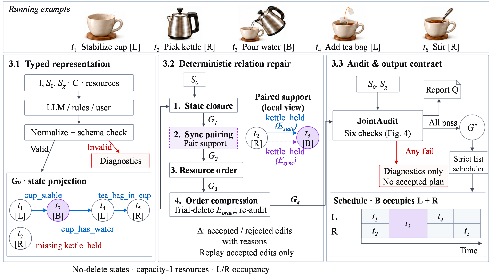
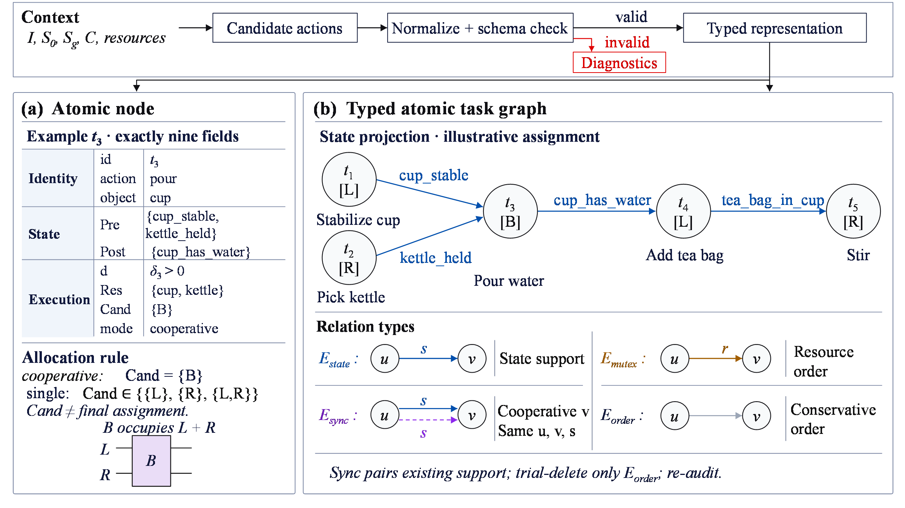
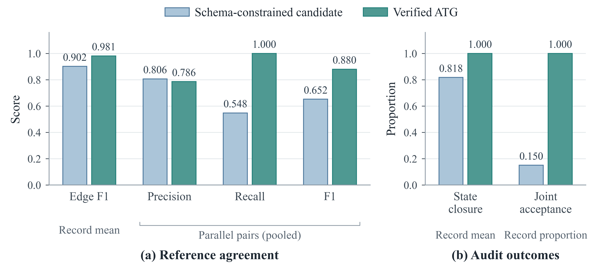

Controlled reference agreement
0.9018 → 0.9813
Mean complete-label edge F1
160 records from four fixed topologies with 40 duration variants each. These are not 160 independent task specifications.
ATG Repair
From candidate relations to auditable parallel task plans.
Local preview · Code and data available below
Dual-unit collaborative planning requires checkable task dependencies and occupancy constraints. Candidate plans provided by large models, rules, or users may conform to a schema yet lack state support, resource ordering, or cooperative pairing, preventing their direct use in parallel scheduling. This study proposes a deterministic framework for atomic task graph relation repair. Typed nodes and relations represent discrete states, capacity-constrained resources, and execution-unit occupancy. The framework sequentially performs state closure, synchronization pairing, resource orientation, and conservative order compression. An accepted plan is returned only after both the joint graph audit and actual schedule checks pass; the edit log supports replay using accepted events. The experiments compare relation restoration, repair outcomes on identical inputs, and simulated execution of accepted plans using fixed skills. On controlled samples, full-label edge F1 increases from 0.9018 to 0.9813, but the full method does not outperform simple repair with shared compression. Public resource-task projections show benefits from resource orientation, whereas public tool tasks show increased formal acceptance alongside reduced reference-edge agreement. In dual-Panda physics simulation, skills execute successfully under nominal conditions but can fail under stress, showing that passing the discrete checks does not guarantee physical execution success. The project page is https://roboplanner.github.io/atg-repair-planning/.
Four ordered repair stages, followed by joint auditing and strict scheduling.

Candidate → repair → audit → schedule. A candidate is accepted only after graph and actual schedule checks. Cooperative mode B occupies L + R; it is not a third execution unit.
Repair represented causal support with precise state labels.
Pair existing support with the same source, target, and state.
Turn shared-resource conflicts into an acyclic directed order.
Trial-delete only Eorder; re-audit and accept or restore.

Any failed check yields diagnostics and no accepted schedule. Rejection does not prove infeasibility.
Eight constructed task templates, 240 physics simulation runs, and 20 complete recordings.
Compare full and serial schedules, then inspect the effects of mass, friction, position estimates, and skill windows. All 56 failed runs remain in the data.
Seed 100, selected before evaluation
Fixed skills, frictional grasps, no object attachments or teleportation. Times are supplied skill windows in simulated seconds. These are constructed simulation tasks, not real-robot recordings; stress tests do not include serial counterparts.
View all eight simulated task scenes ↗ · Protocol and reproduction guide ↗ · Earlier 30-run exploratory archive ↓
Explore accepted schedules from the frozen records. Playback follows stored task times and L/R occupancy; time here is symbolic.
Loading the archived record…
Swipe the diagram horizontally to inspect the complete timeline.
Controlled comparisons and independent public-source checks.
Complete figure, table and source-data index ↗
Controlled reference agreement
0.9018 → 0.9813
160 records from four fixed topologies with 40 duration variants each. These are not 160 independent task specifications.
Public resource projections
25.72%
Full method versus field matching with shared compression on six two-unit job-shop projections. A finite-instance result.
Independent source checks
41 / 41
13 public-specification inputs evaluated under four settings. This is a conditional output check, not 100% repair completeness.
On the controlled sample, the simple comparator with the same compression slightly outperforms the full method. The sample does not establish extra benefit from the full heuristic.
Edge F1 excludes Eorder. Compression alone cannot change this metric.
| Method | Accepted | Edge F1 | Speedup |
|---|---|---|---|
| Full method | 160/160 | 0.9813 | 1.2535× |
| Field matching + compression | 160/160 | 0.9853 | 1.2619× |
Six of ten AssemblyGrid recipes are fully adaptable to the represented planning model. Four recipes are excluded for unsupported cardinality or XOR semantics. One official inclusive-OR specification test is counted separately. Six OR-Library job-shop instances are projected onto two added generic execution units while retaining machine resources.
The projection is not a replication of the original robot simulation and is not compared with the original job-shop optimum. Candidates are deterministic adaptations of the frozen public specifications.
Adaptable archived candidates number 234/497 for CodeLlama-13b and 67/489 for Mistral-7b. From audit-only to the full method, accepted counts rise from 175 to 234 and 44 to 64, respectively; mean reference edge F1 falls from 0.4226 to 0.4040 and from 0.4064 to 0.3023. Tool-dependency data do not supply robot resource or cooperative-occupancy semantics.
The 24 GPT-6 conversation candidates contain 254 nodes. All original candidates pass, and repair produces zero net relation change. Task specifications and candidates come from the same method-aware session; these artifacts are not an independently verifiable provider API benchmark.
In a separate author-constructed three-node family, 736 of 1,728 inputs have independently checked feasible witnesses. The full method accepts 720 of them and rejects 16 feasible inputs. No false acceptance was observed in this finite family; completeness is not established.

Download the frozen inputs, source code, trajectories, and evaluation records.
Download and extract the planning ZIP. Open its ATG_reproduction_v7_70 folder, then run:
python reproduce_all.py results/new_runUse a new output directory. Stable results are checked against the archive; machine timings are not expected to match.
The frozen planning suites use the Python standard library. The simulation package has separately pinned MuJoCo, NumPy and rendering dependencies.
ATG_reproduction_v7_70.zip · SHA-256
922881a57e08e3cc1a0f28e283e2837dabfb486d1c612fc282feb4575a8f0f4aThe package preserves the v7.70 experimental snapshot. Manuscript v7.87 cites the public project page and includes the separate expanded MuJoCo study. The v7.70 planning experiments in this archive remain unchanged.
The accepted interface checks represented discrete states, capacity-one resources, and L/R occupancy. It does not establish unmodelled task semantics, collision-free motion, trajectory feasibility, or hardware safety. The repair procedure is heuristic and can reject feasible inputs.
Research manuscript in preparation. This project page does not represent a published paper or a hardware evaluation.